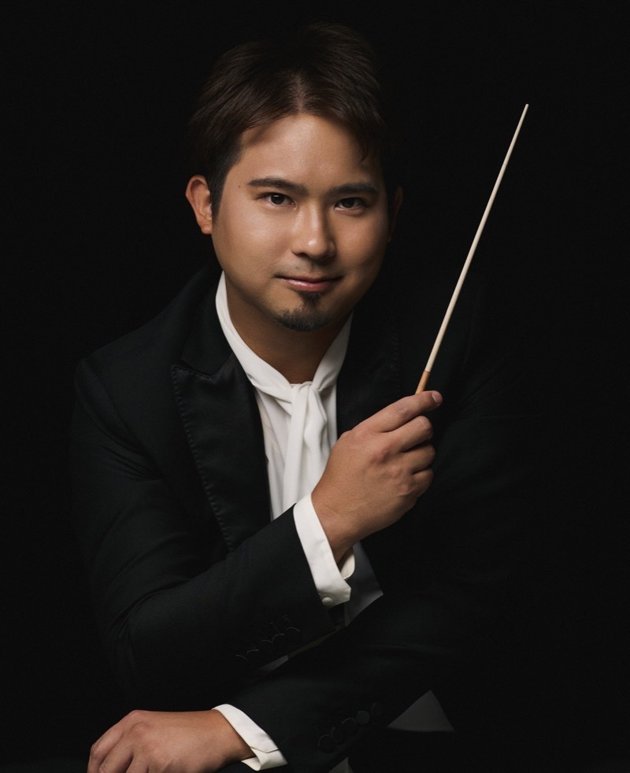

鋼琴 · 藝術總監
林易
Steven Lin
台灣旅美鋼琴家林易是 Opus Formosa 的創辦人與藝術總監。他熱衷於連結跨國界的台灣音樂家，致力於培育藝術家並促進古典音樂在台灣的發展。在策劃音樂節的同時，他也持續以獨奏家身份活躍於國際舞台，足跡遍及北美、歐洲與亞洲。
stevenlinpiano.com ↗— 以下依姓名字母順序排列 —

小提琴
Boris Borgolotto
法國小提琴家，以生動感性的詮釋與卓越舞台魅力廣受矚目，榮獲紐約 IBLA 基金會國際大賽首獎。足跡遍及卡內基音樂廳、巴黎愛樂廳、威格摩爾音樂廳與阿姆斯特丹音樂廳，曾與 Myung-Whun Chung、Ton Koopman 及 Joe Hisaishi 等世界級指揮合作演出。

小提琴
黃凱珉
Sirena Huang
《紐約時報》盛讚其演奏「精緻入微」，TED 形容她擁有「超越年齡的音樂家靈魂」。
台裔美籍小提琴家黃凱珉榮獲 2022 年印第安納波利斯國際小提琴大賽首獎，並曾獲柴可夫斯基青少年國際大賽（2009）及 Elmar Oliveira 國際小提琴大賽（2017）首獎。她曾與紐約愛樂、克里夫蘭管弦樂團及上海交響樂團合作演出，師承伊扎克·帕爾曼，取得茱莉亞音樂學院學士及耶魯大學藝術家文憑。

中提琴
Adrien La Marca
「真正純粹的才華。」——《金融時報》 「中提琴界的新英雄。」——《世界報》
法國中提琴家，生於艾克斯普羅旺斯。曾獲威廉·普利姆羅斯、萊昂內爾·特第斯及布拉姆斯國際大賽首獎，並於 2016 年成為首位榮獲法國「Fondation Lagardère」大獎的古典音樂家。先後就讀巴黎音樂學院、萊比錫及柏林音樂學院，師承 Tatjana Masurenko 及 Tabea Zimmermann。

大提琴
林恩俊
Eugene Lin
曾榮獲特隆赫姆國際室內樂大賽第二名，並入圍伊莉莎白女王大提琴大賽及日內瓦國際大賽。現任費城管弦樂團大提琴手，曾代演芝加哥交響樂團與匹茲堡交響樂團，並曾擔任太平洋音樂節、美國青年交響樂團及科爾本樂團首席大提琴。畢業於科爾本音樂學院，師承 Clive Greensmith。

小提琴
三浦文彰
Fumiaki Miura
日本小提琴家，1993 年生於東京。2009 年榮獲漢諾威約阿希姆國際小提琴大賽首獎，並同時獲得評論家獎與聽眾獎，成為該賽事史上最年輕且獲獎最多的得主。師承德倉嗣生（東京音樂大學），繼而赴維也納師從 Pavel Vernikov 與 Julian Rachlin，並自 2009 年起受 Pinchas Zukerman 指導。合作樂團涵蓋馬林斯基劇院、皇家愛樂、洛杉磯愛樂及 NHK 交響樂團，曾與 Valery Gergiev、Krzysztof Penderecki 等名指揮同台，並活躍於拉維尼亞、石勒蘇益格—霍爾斯泰因音樂節及 Menuhin Festival Gstaad 等舞台。以 Munetsugu 財團出借之 1704 年史特拉底瓦里「Viotti」演奏。

大提琴
Edgar Moreau
法國大提琴家，2017 年榮獲比利時伊莉莎白女王大賽第二名，為同屆最矚目的青年藝術家。師承 Philippe Muller 於巴黎音樂學院，及 Jens Peter Maintz 於柏林漢斯·艾斯勒音樂學院深造。演奏足跡遍及巴黎愛樂廳、柏林愛樂廳及維也納音樂廳，以音色深邃、表達直指人心著稱。

小提琴
丁章媛
Belle Ting
「當她拉奏時，彷彿每一首樂曲都是為她而寫。」—— Ivry Gitlis
丁章媛多次榮獲國際大賽殊榮，包括比利時國際小提琴大賽首獎與最佳詮釋獎、美國 Cooper 國際小提琴比賽首獎、布拉姆斯國際音樂比賽第二名及最佳詮釋特別獎、哈察度量國際小提琴比賽第三名及觀眾獎。她曾與克里夫蘭交響樂團、莫斯科愛樂及亞美尼亞國家交響樂團等合作演出，並登上維也納黃金廳等著名舞台。她是 Verbier Festival 及 Progetto Martha Argerich 等頂級音樂節的常客。
室內樂三重奏
Trio Seoul

小提琴
Jinjoo Cho
曾獲印第安納波利斯、蒙特婁、布宜諾斯艾利斯等國際大賽首獎，曾與克里夫蘭、蒙特婁及首爾愛樂等知名樂團合作演出，並活躍於卡內基音樂廳及阿斯本音樂節舞台。現任美國西北大學拜恩音樂學院副教授。

大提琴
Brannon Cho
第六屆保羅國際大提琴大賽首獎得主，並榮獲伊莉莎白女王、瑙姆堡及卡薩多大賽殊榮。演奏足跡遍及卡內基音樂廳及威格摩爾音樂廳，所用琴為 1668 年 Antonio Casini 大提琴。

鋼琴
Kyu Yeon Kim
曾獲都柏林、伊莉莎白女王、克里夫蘭及日內瓦等國際鋼琴大賽大獎，曾與費城交響樂團、克里夫蘭管弦樂團及首爾愛樂合作演出。現任首爾國立大學鋼琴系副教授。
更多藝術家即將公布
More Artists to be Announced